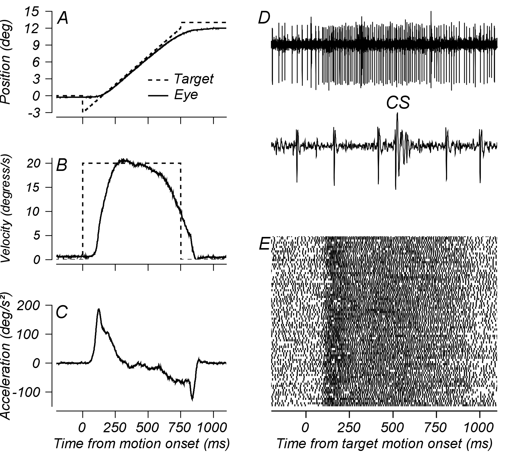

Broadly, I am interested in principles governing the function of the primate visual and visuomotor system. Below is a set of projects I have worked on, or am actively working on.
Cerebellar control of eye movements

Simple and complex spikes from a single Purkinje cell in the Oculomotor Vermis during smooth tracking of a point (Raghavan and Lisberger 2017).
Geniculate and cortical gain controls
Efficient coding: retinal signals and natural scene statistics